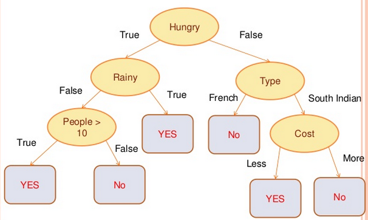

JavaScript and Machine Learning
Some Algorithms and Samples
By @ajlopez
https://github.com/ajlopez/Talks/JavaScriptMachineLearning
https://github.com/ajlopez/Talks/MachineLearningIntro
https://github.com/ajlopez/JavaScriptAI
Using reveal.js
Machine Learning
Definitions?
The science of getting computers to act without being explicitly programmed
The construction and study of algorithms that can learn from and make predictions on data
The creation of a model from example inputs in order to make data-driven predictions or decisions
Learning from experience either with or without supervision from humans
Uses
- Text classification: spam detection
- Ranking items: priority inbox
- Regression models: predicting page views
- Regularization: text regression
- Optimization: code breaking
- Unsupervised learned: building a stock market index
- Spatial similarity: clustering US Senators by the voting records
- Recommendation system: suggesting R packages to users
- Social network analysis: who to follow on Twitter
- Underwriting: approve loans
Main Source: Machine Learning for Hackers
Flavours
- Reinforcement Learning + Interact with an Environment
- Data + Supervised Learning
- Data + Unsupervised Learning
Algorithms
- K-Nearest Neighbours
- Decision Trees
- Support Vector Machines
- Neural Networks
- Genetic Algorithms
- Evolutionary Programs
- Distributed ...
- ...
Decision Trees
Genetic Algorithms
Search for a Solution to a Problem
Stochastic Search Algorithms
Essentially, Reinformence Learning Algorithms: Fitness
Genotype
- Represents a solution/individual
- Composed by "genes"
- Evaluation of Performance
- Mutation
- Crossover
Generic Structure